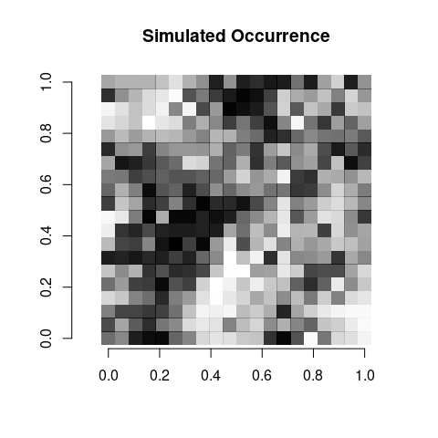
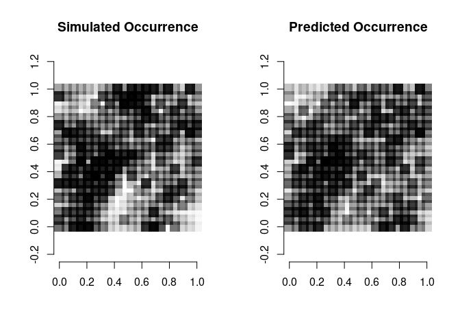

Fitting occupancy models with random intercepts in spOccupancy
Jeffrey W. Doser
2022
Source:vignettes/randomEffects.Rmd
randomEffects.RmdIntroduction
This vignette details how to include random intercepts when fitting single-species or multi-species occupancy models in spOccupancy. For an introduction to the basic spOccupancy functionality, see the introductory vignette. spOccupancy supports random intercepts in the occurrence and detection portions of all single-species and multi-species occupancy models, with the exception that we have yet to implement random intercepts in any integrated occupancy models. Adding random intercepts to integrated models and random slopes to all models is part of future planned development. Here I show how to simulate data for a spatially explicit single-species occupancy model with random intercepts in occurrence and detection using simOcc(), and subsequently show how to include random intercepts using lme4 syntax (Bates et al. 2015) with spPGOcc(). Random intercepts are included in all other single-species and multi-species models in an analogous manner.
Simulating data with simOcc()
The function simOcc() simulates single-species detection-nondetection data. simOcc() has the following arguments.
simOcc(J.x, J.y, n.rep, beta, alpha, psi.RE = list(), p.RE = list(),
sp = FALSE, cov.model, sigma.sq, phi, nu, ...)J.x and J.y indicate the number of spatial locations to simulate data along a horizontal and vertical axis, respectively, such that J.x * J.y is the total number of sites (i.e., J). n.rep is a numeric vector of length J that indicates the number of replicates at each of the J sites. beta and alpha are numeric vectors containing the intercept and any regression coefficient parameters for the occurrence and detection portions of the occupancy model, respectively. psi.RE and p.RE are lists that are used to specify random intercepts on occurrence and detection, respectively. These are only specified when we want to simulate data with random intercepts. Each list should be comprised of two tags: levels, a vector that specifies the number of levels for each random effect included in the model, and sigma.sq.psi or sigma.sq.p, which specify the variances of the random effects for each random effect included in the model. sp is a logical value indicating whether to simulate data with a spatial Gaussian process. cov.model specifies the covariance function used to model the spatial dependence structure, with supported values of exponential, matern, spherical, and gaussian. Finally, sigma.sq is the spatial variance parameter, phi is the spatial range parameter, and nu is the spatial smoothness parameter (only applicable when cov.model = 'matern'). Below we simulate data across 225 sites with 1-4 replicates at a given site, a single covariate effect on occurrence, a single covariate effect on detection, spatial autocorrelation following a spherical correlation function, and a random intercept on occurrence and detection.
library(spOccupancy)
set.seed(1000)
J.x <- 20
J.y <- 20
# Total number of sites
(J <- J.x * J.y)[1] 400
# Number of replicates at each site
n.rep <- sample(2:4, J, replace = TRUE)
# Intercept and covariate effect on occurrence
beta <- c(-0.5, -0.2)
# Intercept and covariate effect on detection
alpha <- c(0.9, -0.3)
# Single random intercept on occurrence
psi.RE <- list(levels = 20, sigma.sq.psi = 0.75)
# Single random intercept on detection
p.RE <- list(levels = 25, sigma.sq.p = 1.1)
# Spatial range
phi <- 3 / .8
# Spatial variance
sigma.sq <- 1
# Simulate the data
dat <- simOcc(J.x = J.x, J.y = J.y, n.rep = n.rep, beta = beta,
alpha = alpha, psi.RE = psi.RE, p.RE = p.RE,
sp = TRUE, sigma.sq = sigma.sq, phi = phi,
cov.model = 'spherical')For the occurrence random effect, we assumed there were 20 levels and a variance of 0.75. For example, we could suppose these levels corresponded to different administrative units across the 225 sites we simulated, and we want to account for potential correlation between sites within each of the units. For the detection random effect, we assumed there were 25 levels and a variance of 1.1. For example, we could suppose there were 25 different observers that collected the data, and we wanted to account for variation in observer skill (and thus detection probability) across the different observers.
Next, let’s explore the simulated data a bit before we move on (plotting code adapted from Hooten and Hefley (2019)).
str(dat)List of 15
$ X : num [1:400, 1:2] 1 1 1 1 1 1 1 1 1 1 ...
$ X.p : num [1:400, 1:4, 1:2] 1 1 1 1 1 1 1 1 1 1 ...
$ coords : num [1:400, 1:2] 0 0.0526 0.1053 0.1579 0.2105 ...
..- attr(*, "dimnames")=List of 2
.. ..$ : NULL
.. ..$ : chr [1:2] "Var1" "Var2"
$ w : num [1:400, 1] 1.005 -0.229 1.826 2.416 1.952 ...
$ w.factor : logi NA
$ psi : num [1:400, 1] 0.573 0.474 0.867 0.938 0.947 ...
$ z : int [1:400] 0 0 1 1 1 1 0 0 0 0 ...
$ p : num [1:400, 1:4] 0.897 0.412 0.605 NA 0.442 ...
$ y : int [1:400, 1:4] 0 0 1 NA 1 0 0 0 0 0 ...
$ X.p.re : int [1:400, 1:4, 1] 21 8 24 NA 22 10 1 6 11 3 ...
$ X.re : int [1:400, 1] 18 12 3 1 12 7 2 2 1 15 ...
$ X.w : num [1:400, 1] 1 1 1 1 1 1 1 1 1 1 ...
$ alpha.star: num [1:25] 0.7089 -0.0759 -0.8506 0.476 1.5554 ...
$ beta.star : num [1:20] 0.881 0.385 0.476 0.343 -1.609 ...
$ lambda : logi NAThe simulated data object consists of the following objects: X (the occurrence design matrix), X.p (the detection design matrix), coords (the spatial coordinates of each site), w (the latent spatial process, psi (occurrence probability), z (the latent occupancy status), y (the detection-nondetection data, X.p.re (the detection random effect levels for each site), X.re (the occurrence random effect levels for each site), alpha.star (the detection random effects for each level of the random effect), beta.star (the occurrence random effects for each level of the random effect).
# Detection-nondetection data
y <- dat$y
# Occurrence design matrix for fixed effects
X <- dat$X
# Detection design matrix for fixed effets
X.p <- dat$X.p
# Occurrence design matrix for random effects
X.re <- dat$X.re
# Detection design matrix for random effects
X.p.re <- dat$X.p.re
# Occurrence values
psi <- dat$psi
# Spatial coordinates
coords <- dat$coords
# Simple plot of the occurrence probability across space.
# Dark points indicate high occurrence.
plot(coords, type = "n", xlab = "", ylab = "", asp = TRUE, main = "Simulated Occurrence",
bty = 'n')
points(coords, pch=15, cex = 2.1, col = rgb(0,0,0,(psi-min(psi))/diff(range(psi))))
We see there is clear variation in occurrence probability across the simulated spatial region. The final step before we can fit the model is to package up the data in a list for use in spOccupancy model fitting functions. This requires creating a list that consists of the detection-nondetection data (y), occurrence covariates (occ.covs), detection covariates (det.covs), and coordinates (coords). See the introductory vignette for more details.
# Package all data into a list
# Occurrence covariates consists of the fixed effects and random effect
occ.covs <- cbind(X[, 2], X.re)
colnames(occ.covs) <- c('occ.cov.1', 'occ.factor.1')
# Detection covariates consists of the fixed effects and random effect
det.covs <- list(det.cov.1 = X.p[, , 2],
det.factor.1 = X.p.re[, , 1])
# Package into a list for spOccupancy
data.list <- list(y = y,
occ.covs = occ.covs,
det.covs = det.covs,
coords = coords)
# Take a look at the data structure.
str(data.list)List of 4
$ y : int [1:400, 1:4] 0 0 1 NA 1 0 0 0 0 0 ...
$ occ.covs: num [1:400, 1:2] -0.261 2.343 -0.378 0.372 -1.663 ...
..- attr(*, "dimnames")=List of 2
.. ..$ : NULL
.. ..$ : chr [1:2] "occ.cov.1" "occ.factor.1"
$ det.covs:List of 2
..$ det.cov.1 : num [1:400, 1:4] -0.494 0.691 0.339 NA -0.677 ...
..$ det.factor.1: int [1:400, 1:4] 21 8 24 NA 22 10 1 6 11 3 ...
$ coords : num [1:400, 1:2] 0 0.0526 0.1053 0.1579 0.2105 ...
..- attr(*, "dimnames")=List of 2
.. ..$ : NULL
.. ..$ : chr [1:2] "Var1" "Var2"
# Take a look at the occurrence covariates
head(occ.covs) occ.cov.1 occ.factor.1
[1,] -0.26139909 18
[2,] 2.34325562 12
[3,] -0.37798960 3
[4,] 0.37215428 1
[5,] -1.66296763 12
[6,] 0.07117392 7One important thing to note about including random effects in spOccupancy is that we must supply the random effects in as numeric values. Notice in the occ.factor.1 column in occ.covs, the random effect levels are specified as a numeric value, which indicates the specific level of the random effect at that given site. spOccupancy will return an informative error if we supply random effects as factors or character vectors and will tell us to convert them to numeric in order to fit the model.
Fit the model using spPGOcc()
We now fit the model using spPGOcc(). Random effects are included in the model formulas using standard lme4 notation. Below we run a spatially-explicit occupancy model for 400 batches each of length 25 (10000 total MCMC iterations). We use the default tuning and prior values that spOccupancy provides. We use a Nearest Neighbor Gaussian Process with 10 neighbors and the spherical spatial correlation function.
inits <- list(alpha = 0, beta = 0, sigma.sq.psi = 0.5,
sigma.sq.p = 0.5, z = apply(dat$y, 1, max, na.rm = TRUE),
sigma.sq = 1, phi = 3 / 0.5)
out.full <- spPGOcc(occ.formula = ~ occ.cov.1 + (1 | occ.factor.1),
det.formula = ~ det.cov.1 + (1 | det.factor.1),
data = data.list,
n.batch = 400,
batch.length = 25,
inits = inits,
accept.rate = 0.43,
cov.model = "spherical",
NNGP = TRUE,
n.neighbors = 10,
n.report = 100,
n.burn = 5000,
n.thin = 5,
n.chains = 1) ----------------------------------------
Preparing to run the model
----------------------------------------No prior specified for beta.normal.
Setting prior mean to 0 and prior variance to 2.72No prior specified for alpha.normal.
Setting prior mean to 0 and prior variance to 2.72No prior specified for phi.unif.
Setting uniform bounds based on the range of observed spatial coordinates.No prior specified for sigma.sq.
Using an inverse-Gamma prior with the shape parameter set to 2 and scale parameter to 1.No prior specified for sigma.sq.psi.ig.
Setting prior shape to 0.1 and prior scale to 0.1No prior specified for sigma.sq.p.ig.
Setting prior shape to 0.1 and prior scale to 0.1w is not specified in initial values.
Setting initial value to 0----------------------------------------
Building the neighbor list
----------------------------------------
----------------------------------------
Building the neighbors of neighbors list
----------------------------------------
----------------------------------------
Model description
----------------------------------------
NNGP Occupancy model with Polya-Gamma latent
variable fit with 400 sites.
Samples per chain: 10000 (400 batches of length 25)
Burn-in: 5000
Thinning Rate: 5
Number of Chains: 1
Total Posterior Samples: 1000
Using the spherical spatial correlation model.
Using 10 nearest neighbors.
Source compiled with OpenMP support and model fit using 1 thread(s).
Adaptive Metropolis with target acceptance rate: 43.0
----------------------------------------
Chain 1
----------------------------------------
Sampling ...
Batch: 100 of 400, 25.00%
Parameter Acceptance Tuning
phi 40.0 0.61263
-------------------------------------------------
Batch: 200 of 400, 50.00%
Parameter Acceptance Tuning
phi 8.0 0.49164
-------------------------------------------------
Batch: 300 of 400, 75.00%
Parameter Acceptance Tuning
phi 44.0 0.51171
-------------------------------------------------
Batch: 400 of 400, 100.00%
summary(out.full)
Call:
spPGOcc(occ.formula = ~occ.cov.1 + (1 | occ.factor.1), det.formula = ~det.cov.1 +
(1 | det.factor.1), data = data.list, inits = inits, cov.model = "spherical",
NNGP = TRUE, n.neighbors = 10, n.batch = 400, batch.length = 25,
accept.rate = 0.43, n.report = 100, n.burn = 5000, n.thin = 5,
n.chains = 1)
Samples per Chain: 10000
Burn-in: 5000
Thinning Rate: 5
Number of Chains: 1
Total Posterior Samples: 1000
Run Time (min): 1.508
Occurrence (logit scale):
Mean SD 2.5% 50% 97.5% Rhat ESS
(Intercept) 0.0330 0.3467 -0.6631 0.0256 0.6928 NA 112
occ.cov.1 -0.4691 0.1436 -0.7714 -0.4645 -0.2022 NA 455
Occurrence Random Effect Variances (logit scale):
Mean SD 2.5% 50% 97.5% Rhat ESS
occ.factor.1 0.9933 0.5696 0.2962 0.8857 2.3771 NA 388
Detection (logit scale):
Mean SD 2.5% 50% 97.5% Rhat ESS
(Intercept) 0.8823 0.2297 0.4698 0.8735 1.3604 NA 391
det.cov.1 -0.2347 0.1024 -0.4404 -0.2336 -0.0395 NA 1000
Detection Random Effect Variances (logit scale):
Mean SD 2.5% 50% 97.5% Rhat ESS
det.factor.1 1.113 0.5275 0.4405 0.999 2.5635 NA 624
Spatial Covariance:
Mean SD 2.5% 50% 97.5% Rhat ESS
sigma.sq 1.1458 0.9362 0.3963 0.9641 3.2988 NA 48
phi 3.2926 0.8347 2.1985 3.1036 5.2938 NA 41The summary of the model output shows our model recovers the values we used to simulate the data. Let’s also fit a model that doesn’t include the occurrence and detection random effects, and compare their performance using the WAIC (Watanabe 2010).
out.no.re <- spPGOcc(occ.formula = ~ occ.cov.1,
det.formula = ~ det.cov.1,
data = data.list,
n.batch = 400,
batch.length = 25,
inits = inits,
accept.rate = 0.43,
cov.model = "spherical",
NNGP = TRUE,
n.neighbors = 10,
n.report = 100,
n.burn = 5000,
n.thin = 5,
n.chains = 1) ----------------------------------------
Preparing to run the model
----------------------------------------No prior specified for beta.normal.
Setting prior mean to 0 and prior variance to 2.72No prior specified for alpha.normal.
Setting prior mean to 0 and prior variance to 2.72No prior specified for phi.unif.
Setting uniform bounds based on the range of observed spatial coordinates.No prior specified for sigma.sq.
Using an inverse-Gamma prior with the shape parameter set to 2 and scale parameter to 1.w is not specified in initial values.
Setting initial value to 0----------------------------------------
Building the neighbor list
----------------------------------------
----------------------------------------
Building the neighbors of neighbors list
----------------------------------------
----------------------------------------
Model description
----------------------------------------
NNGP Occupancy model with Polya-Gamma latent
variable fit with 400 sites.
Samples per chain: 10000 (400 batches of length 25)
Burn-in: 5000
Thinning Rate: 5
Number of Chains: 1
Total Posterior Samples: 1000
Using the spherical spatial correlation model.
Using 10 nearest neighbors.
Source compiled with OpenMP support and model fit using 1 thread(s).
Adaptive Metropolis with target acceptance rate: 43.0
----------------------------------------
Chain 1
----------------------------------------
Sampling ...
Batch: 100 of 400, 25.00%
Parameter Acceptance Tuning
phi 16.0 0.56553
-------------------------------------------------
Batch: 200 of 400, 50.00%
Parameter Acceptance Tuning
phi 36.0 0.55433
-------------------------------------------------
Batch: 300 of 400, 75.00%
Parameter Acceptance Tuning
phi 16.0 0.49164
-------------------------------------------------
Batch: 400 of 400, 100.00%
waicOcc(out.full) elpd pD WAIC
-501.14868 65.72206 1133.74148
waicOcc(out.no.re) elpd pD WAIC
-575.40374 38.13593 1227.07933 We see the WAIC is substantially smaller for the model that includes the occurrence and detection random effects. Finally, let’s look at the predicted occurrence values from the full model to see how they compare to the values we used to simulate the data.
par(mfrow = c(1, 2))
plot(coords, type = "n", xlab = "", ylab = "", asp = TRUE, main = "Simulated Occurrence",
bty = 'n')
points(coords, pch=15, cex = 2.1, col = rgb(0,0,0,(psi-min(psi))/diff(range(psi))))
# Predicted mean occurrence values
psi.means <- apply(out.full$psi.samples, 2, mean)
plot(coords, type = "n", xlab = "", ylab = "", asp = TRUE, main = "Predicted Occurrence",
bty = 'n')
points(coords, pch=15, cex = 2.1, col = rgb(0,0,0,(psi.means-min(psi.means))/diff(range(psi.means))))
We see the model does a fairly decent job of identifying the spatial structure in occurrence across the simulated region, with our mean predicted occurrence being more smooth than the single simulated occurrence data set, as we would expect. Just like with models with only fixed effects, we can predict new values of occurrence or detection probability given a set of covariate values and spatial coordinates using the predict() function. However, prediction becomes a bit more complicated when we have non-structured random effects in the model, as we could imagine predicting at observed levels of the random effect, or predicting at new levels of the random effect. spOccupancy allows for prediction at both observed levels and new levels of random effects, and also allows for prediction to take into account the random effects, or simply ignore the random effects when making predictions and just generate predictions using the fixed effects. All predict() functions for spOccupancy objects contain the argument ignore.RE, which is a logical value that takes value TRUE or FALSE. When ignore.RE = FALSE (the default), both sampled levels and non-sampled levels of random effects are supported for prediction. For sampled levels, the posterior distribution for the random intercept corresponding to that level of the random effect will be used in the prediction, which will likely result in a more accurate estimate of occurrence/detection probability for that site. For non-sampled levels, random values are drawn from a normal distribution using the posterior samples of the random effect variance, which results in fully propagated uncertainty in predictions with models that incorporate random effects. Alternatively, if ignore.RE = TRUE, the random effects will not be used for prediction and predictions will simply be generated using the fixed effects in the model.
Suppose we wish to predict occurrence at a new site, which has spatial coordinates (0.32, 0.55), a value of 0.34 for our occurrence covariate (occ.cov.1) and a random effect level of 5 (which is a level that is sampled in our original data set). Below we predict occurrence at this new site, using the random effect in the prediction by setting ignore.RE = FALSE (which we could just not specify since it is the default). Note that when predicting using random effects, the column name of the random effect must match the name of the random effect used when fitting the model.
# Create the design matrix for the new site
X.0 <- cbind(1, 0.34, 5)
# Make sure column names of random effects align with how we fit the model.
colnames(X.0) <- c('intercept', 'occ.cov.1', 'occ.factor.1')
# Coordinates of new site
coords.0 <- cbind(0.32, 0.55)
# Predict at new site
pred.out <- predict(out.full, X.0, coords.0, ignore.RE = FALSE, verbose = FALSE)
str(pred.out)List of 6
$ z.0.samples : 'mcmc' num [1:1000, 1] 1 1 1 1 1 1 0 1 0 1 ...
..- attr(*, "mcpar")= num [1:3] 1 1000 1
$ w.0.samples : 'mcmc' num [1:1000, 1] 2 1.71 3.25 2.55 3.06 ...
..- attr(*, "mcpar")= num [1:3] 1 1000 1
$ psi.0.samples: 'mcmc' num [1:1000, 1] 0.786 0.789 0.937 0.893 0.79 ...
..- attr(*, "mcpar")= num [1:3] 1 1000 1
$ run.time : 'proc_time' Named num [1:5] 0.034 0.005 0.013 0 0
..- attr(*, "names")= chr [1:5] "user.self" "sys.self" "elapsed" "user.child" ...
$ call : language predict.spPGOcc(object = out.full, X.0 = X.0, coords.0 = coords.0, verbose = FALSE, ignore.RE = FALSE)
$ object.class : chr "spPGOcc"
- attr(*, "class")= chr "predict.spPGOcc"
# Get summary of occurrence probability at new site
summary(pred.out$psi.0.samples)
Iterations = 1:1000
Thinning interval = 1
Number of chains = 1
Sample size per chain = 1000
1. Empirical mean and standard deviation for each variable,
plus standard error of the mean:
Mean SD Naive SE Time-series SE
0.607400 0.187756 0.005937 0.014533
2. Quantiles for each variable:
2.5% 25% 50% 75% 97.5%
0.2227 0.4685 0.6167 0.7538 0.9432 Alternatively, we can just predict occurrence probability at the new site using the fixed effects only by setting ignore.RE = TRUE.
# Remove random effect from design matrix
X.0 <- X.0[, -3, drop = FALSE]
pred.no.re <- predict(out.full, X.0, coords.0, ignore.RE = TRUE, verbose = FALSE)
# Get summary of occurrence probability
summary(pred.no.re$psi.0.samples)
Iterations = 1:1000
Thinning interval = 1
Number of chains = 1
Sample size per chain = 1000
1. Empirical mean and standard deviation for each variable,
plus standard error of the mean:
Mean SD Naive SE Time-series SE
0.79547 0.12618 0.00399 0.01187
2. Quantiles for each variable:
2.5% 25% 50% 75% 97.5%
0.5073 0.7169 0.8119 0.8929 0.9790 Here we see a relatively small discrepancy between the predicted occurrence probability when we use the random effect and when we don’t use the random effect. Predicting with random effects will allow you to fully propagate uncertainty in our predictions, but may not be desired if predicting at new locations where the level of the random effect is unknown or not sampled in the data.
References
Bates, Douglas, Martin Mächler, Ben Bolker, and Steve Walker. 2015. “Fitting Linear Mixed-Effects Models Using lme4.” Journal of Statistical Software 67 (1): 1–48. https://doi.org/10.18637/jss.v067.i01.
Hooten, Mevin B, and Trevor J Hefley. 2019. Bringing Bayesian Models to Life. CRC Press.
Watanabe, Sumio. 2010. “Asymptotic Equivalence of Bayes Cross Validation and Widely Applicable Information Criterion in Singular Learning Theory.” Journal of Machine Learning Research 11 (12).